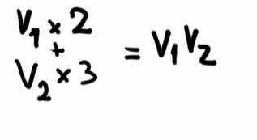
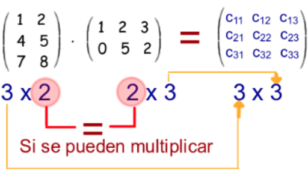
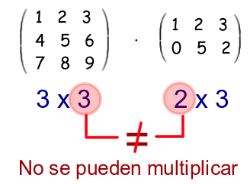
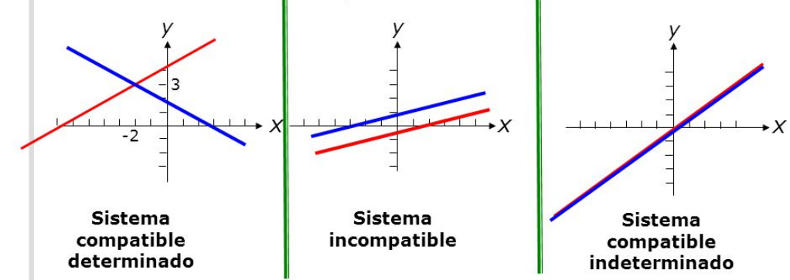

#
Estructuras principales de datos#
Las estructuras de datos principales son:
Escalares
Vectores
Matrices
Tensores
Diferencias entre escalar, vector, matriz & tensor#
La diferencia entre un escalar, un vector, una matriz y un tensor son los grados de libertad con los que se esta trabajando.
Arreglo |
Grados de Libertad |
Descripcion |
|---|---|---|
Escalar |
0 |
Es simplemente un numero. |
Vector |
1 |
Es un arreglo unidimensional de Escalares |
Matriz |
2 |
Es un arreglo bidimensional de vectores |
Tensor |
3+ |
Es un arreglo n-dimensional de matrices |
Escalar#
Un escalar por definicion es un numero.
En python un escalar puede ser un integer, puede ser un float, puede ser un string o incluso un Null.
porque es un objeto, no un arreglo de objetos
#un escalar (float)
escalar = 5.867
#otro escalar (logical)
escalar_python = True
#y otro escalar (string)
escalar_string = "hi"
Vector#
Un escalar por definicion es un arreglo de escalares.
Puede ser un arreglo de objetos de cualquier tipo.
import numpy as np
#vector (notese que solo hay 1 dimension)
vector = np.array(
[1, 2, 3, 4]
)
Funcion para graficar vectores#
import numpy as np
import matplotlib.pyplot as plt
#se crea la funcion para graficar vectores
def graficarVectores(vecs, cols, alpha=1):
plt.figure()
#se dibuja eje Y
plt.axvline(x=0, color = "grey", zorder = 0)
#se dibuja eje X
plt.axhline(y=0, color = "grey", zorder = 0)
for i in range(len(vecs)):
x = np.concatenate([[0,0], vecs[i]])
plt.quiver(
[x[0]],
[x[1]],
[x[2]],
[x[3]],
angles="xy", scale_units="xy", scale=1,
color = cols[i],
alpha = alpha
)
#el vector(es) a graficar, debe pasarse como una lista
#el color(es) a emplear, debe pasarse como una lista de strings
---------------------------------------------------------------------------
ModuleNotFoundError Traceback (most recent call last)
Cell In[3], line 2
1 import numpy as np
----> 2 import matplotlib.pyplot as plt
4 #se crea la funcion para graficar vectores
6 def graficarVectores(vecs, cols, alpha=1):
ModuleNotFoundError: No module named 'matplotlib'
Combinacion lineal#
Una combinacion lineal es:

Un proceso en el cual se multiplican dos vectores por dos escalares y al final el resultado se suma es una combinacion lineal.
Se representa graficamente tal que asi:
import numpy as np
import matplotlib.pyplot as plt
#vector 1
v1 = np.array([2,5])
#vector 2
v2 = np.array([3,2])
#combinacion lineal
v1v2 = 2*v1 + 3*v2
graficarVectores([v1, v2, v1v2], ["red", "orange", "yellow"])
plt.xlim(-1, 20)
plt.ylim(-1, 20)
(-1.0, 20.0)
Todas las posibles combinaciones lineales#
Se hace un grafico que refleje:
todas las posibles combinaciones lineales de v1 y v2
valores de a y b entre (-10,10)
for a in range(-10, 10):
for b in range(-10,10):
plt.scatter(v1[0]*a + v2[0]*b, v1[1]*a + v2[1]*b,
marker = ".",
color = "orange")
plt.xlim(-100,100)
plt.ylim(-100,100)
plt.axvline(x=0, color="grey")
plt.axhline(y=0, color="grey")
plt.show()
Matriz#
Una matriz es un arreglo de vectores
import numpy as np
#matriz (notese que hay 2 dimensiones) Pueden ser n vectores, pero solo hay 2 dimensiones
matriz = np.array([
[1,2,3], #primer vector
[4,5,6], #segundo vector
[7,8,9] #tercer vector (pueden ser mas)
])
matriz
array([[1, 2, 3],
[4, 5, 6],
[7, 8, 9]])
Graficando una matriz con matplotlib#
import matplotlib.pyplot as plt
plt.imshow(matriz, interpolation="nearest")
plt.show()
Matriz identidad#
import numpy as np
#Generar matriz identidad
identidad = np.eye(4) #matriz identidad 4x4
identidad
array([[1., 0., 0., 0.],
[0., 1., 0., 0.],
[0., 0., 1., 0.],
[0., 0., 0., 1.]])
Inversa de una matriz#
Recuerda que para que una matriz sea invertible, su determinante no puede ser cero.
matrizz = np.array([[1, 2, 3],
[4, 5, 6],
[7, 8, 10]])
#calculando inversa
matrizz_inv = np.linalg.inv(matrizz)
print("matriz:", matrizz)
print("matriz inversa:", matrizz_inv)
matriz: [[ 1 2 3]
[ 4 5 6]
[ 7 8 10]]
matriz inversa: [[-0.66666667 -1.33333333 1. ]
[-0.66666667 3.66666667 -2. ]
[ 1. -2. 1. ]]
determinante de una matriz#
matrizz = np.array([[1, 2, 3],
[4, 5, 6],
[7, 8, 9]])
np.linalg.det(matrizz)
#determinante = 0
#esta matriz no tiene inversa, es una matriz singular
0.0
Tensor#
Un tensor es un arreglo de matrices
import numpy as np
# Se crea el tensor
# (note que hay 3 dimensiones) Pueden ser n matrices (o n tensores), en este caso solo haremos 2 matrices
tensor = np.array([
[
[1,2,3], #matriz 1
[4,5,6],
[7,8,9]
],
[
[10,11,12], #matriz 2
[13,14,15],
[16,17,18]
],
[
[19,20,21], #matriz 3
[22,23,24],
[25,26,27]
]
])
#imprimir el tensor
tensor
array([[[ 1, 2, 3],
[ 4, 5, 6],
[ 7, 8, 9]],
[[10, 11, 12],
[13, 14, 15],
[16, 17, 18]],
[[19, 20, 21],
[22, 23, 24],
[25, 26, 27]]])
Graficando un tensor con matplotlib#
import matplotlib.pyplot as plt
plt.imshow(tensor, interpolation="nearest")
plt.show()
No es muy diciente por los numeros que componen el tensor, pero intentemos con un tensor mas diciente
tensor2 = np.array([
[[0,0,0],[0,0,0],[0,0,0]], #0 representa el negro
[[128,128,128],[128,128,128],[128,128,128]], #128 lo que hay entre negro y blanco
[[255,255,255],[255,255,255],[255,255,255]], #255 representa el blanco
])
plt.imshow(tensor2, interpolation="nearest")
plt.show()
El mejor tensor que veras en tu vida#
Ahora intentemos con un tensor mas elaborado.
#matriz para dibujar los cuadros del fondo
baseMatrix = np.array([
[[192,192,192],[128,128,128],[192,192,192],[128,128,128],[192,192,192],[128,128,128],[192,192,192],[128,128,128],[192,192,192],[128,128,128],[192,192,192],[128,128,128],[192,192,192],[128,128,128],[192,192,192],[128,128,128]],
[[128,128,128],[192,192,192],[128,128,128],[192,192,192],[128,128,128],[192,192,192],[128,128,128],[192,192,192],[128,128,128],[192,192,192],[128,128,128],[192,192,192],[128,128,128],[192,192,192],[128,128,128],[192,192,192]],
[[192,192,192],[128,128,128],[192,192,192],[128,128,128],[192,192,192],[128,128,128],[192,192,192],[128,128,128],[192,192,192],[128,128,128],[192,192,192],[128,128,128],[192,192,192],[128,128,128],[192,192,192],[128,128,128]],
[[128,128,128],[192,192,192],[128,128,128],[192,192,192],[128,128,128],[192,192,192],[128,128,128],[192,192,192],[128,128,128],[192,192,192],[128,128,128],[192,192,192],[128,128,128],[192,192,192],[128,128,128],[192,192,192]],
[[192,192,192],[128,128,128],[192,192,192],[128,128,128],[192,192,192],[128,128,128],[192,192,192],[128,128,128],[192,192,192],[128,128,128],[192,192,192],[128,128,128],[192,192,192],[128,128,128],[192,192,192],[128,128,128]],
[[128,128,128],[192,192,192],[128,128,128],[192,192,192],[128,128,128],[192,192,192],[128,128,128],[192,192,192],[128,128,128],[192,192,192],[128,128,128],[192,192,192],[128,128,128],[192,192,192],[128,128,128],[192,192,192]],
[[192,192,192],[128,128,128],[192,192,192],[128,128,128],[192,192,192],[128,128,128],[192,192,192],[128,128,128],[192,192,192],[128,128,128],[192,192,192],[128,128,128],[192,192,192],[128,128,128],[192,192,192],[128,128,128]],
[[128,128,128],[192,192,192],[128,128,128],[192,192,192],[128,128,128],[192,192,192],[128,128,128],[192,192,192],[128,128,128],[192,192,192],[128,128,128],[192,192,192],[128,128,128],[192,192,192],[128,128,128],[192,192,192]],
[[192,192,192],[128,128,128],[192,192,192],[128,128,128],[192,192,192],[128,128,128],[192,192,192],[128,128,128],[192,192,192],[128,128,128],[192,192,192],[128,128,128],[192,192,192],[128,128,128],[192,192,192],[128,128,128]],
[[128,128,128],[192,192,192],[128,128,128],[192,192,192],[128,128,128],[192,192,192],[128,128,128],[192,192,192],[128,128,128],[192,192,192],[128,128,128],[192,192,192],[128,128,128],[192,192,192],[128,128,128],[192,192,192]],
[[192,192,192],[128,128,128],[192,192,192],[128,128,128],[192,192,192],[128,128,128],[192,192,192],[128,128,128],[192,192,192],[128,128,128],[192,192,192],[128,128,128],[192,192,192],[128,128,128],[192,192,192],[128,128,128]],
[[128,128,128],[192,192,192],[128,128,128],[192,192,192],[128,128,128],[192,192,192],[128,128,128],[192,192,192],[128,128,128],[192,192,192],[128,128,128],[192,192,192],[128,128,128],[192,192,192],[128,128,128],[192,192,192]],
[[192,192,192],[128,128,128],[192,192,192],[128,128,128],[192,192,192],[128,128,128],[192,192,192],[128,128,128],[192,192,192],[128,128,128],[192,192,192],[128,128,128],[192,192,192],[128,128,128],[192,192,192],[128,128,128]],
[[128,128,128],[192,192,192],[128,128,128],[192,192,192],[128,128,128],[192,192,192],[128,128,128],[192,192,192],[128,128,128],[192,192,192],[128,128,128],[192,192,192],[128,128,128],[192,192,192],[128,128,128],[192,192,192]],
[[192,192,192],[128,128,128],[192,192,192],[128,128,128],[192,192,192],[128,128,128],[192,192,192],[128,128,128],[192,192,192],[128,128,128],[192,192,192],[128,128,128],[192,192,192],[128,128,128],[192,192,192],[128,128,128]],
[[128,128,128],[192,192,192],[128,128,128],[192,192,192],[128,128,128],[192,192,192],[128,128,128],[192,192,192],[128,128,128],[192,192,192],[128,128,128],[192,192,192],[128,128,128],[192,192,192],[128,128,128],[192,192,192]]
])
#matriz para dibujar a mario
pixelart = np.array([
[[192,192,192],[128,128,128],[192,192,192],[128,128,128],[192,192,192],[232,12,12],[221,11,10],[210,0,0],[199,1,0],[200,0,0],[189,5,5],[128,128,128],[192,192,192],[128,128,128],[192,192,192],[128,128,128]],
[[128,128,128],[192,192,192],[128,128,128],[192,192,192],[221,11,10],[254,0,0],[245,0,10],[245,0,10],[234,0,9],[223,6,14],[223,6,14],[189,5,5],[200,0,2],[210,0,0],[128,128,128],[192,192,192]],
[[192,192,192],[128,128,128],[192,192,192],[128,128,128],[98,78,43],[106,82,46],[117,92,51],[197,177,144],[209,189,154],[204,184,149],[27,27,27],[197,177,144],[192,192,192],[128,128,128],[192,192,192],[128,128,128]],
[[128,128,128],[192,192,192],[128,128,128],[98,78,43],[213,194,162],[117,92,51],[213,194,162],[214,197,169],[218,199,167],[213,194,162],[47,47,47],[209,189,156],[204,184,149],[197,177,144],[128,128,128],[192,192,192]],
[[192,192,192],[128,128,128],[192,192,192],[92,68,30],[218,199,167],[128,100,60],[214,197,169],[218,199,167],[218,199,167],[213,194,162],[208,189,156],[27,27,27],[208,189,156],[203,183,150],[197,177,144],[128,128,128]],
[[128,128,128],[192,192,192],[128,128,128],[78,57,26],[92,68,30],[197,177,144],[218,199,167],[213,194,162],[208,189,156],[208,189,156],[27,27,27],[47,47,47],[63,63,63],[27,27,27],[128,128,128],[192,192,192]],
[[192,192,192],[128,128,128],[192,192,192],[128,128,128],[192,192,192],[204,184,149],[213,194,162],[209,189,154],[204,184,149],[197,177,144],[204,184,149],[204,184,149],[197,177,144],[128,128,128],[192,192,192],[128,128,128]],
[[128,128,128],[192,192,192],[128,128,128],[192,192,192],[221,11,10],[210,0,1],[92,49,224],[200,0,0],[212,0,0],[221,11,10],[42,41,220],[192,192,192],[128,128,128],[192,192,192],[128,128,128],[192,192,192]],
[[192,192,192],[128,128,128],[192,192,192],[232,12,12],[254,0,0],[245,0,10],[84,45,214],[245,0,10],[234,0,9],[83,46,201],[210,0,1],[221,11,10],[232,12,12],[128,128,128],[192,192,192],[128,128,128]],
[[128,128,128],[192,192,192],[232,12,12],[254,0,0],[245,0,10],[234,0,9],[84,45,214],[92,49,224],[84,45,214],[77,41,189],[234,0,9],[245,0,10],[254,0,0],[221,11,10],[128,128,128],[192,192,192]],
[[192,192,192],[128,128,128],[197,177,144],[208,191,161],[245,0,10],[84,45,214],[247,223,61],[92,49,224],[83,46,201],[225,202,47],[67,35,172],[232,1,9],[208,191,161],[197,177,144],[192,192,192],[128,128,128]],
[[128,128,128],[192,192,192],[204,184,149],[214,197,169],[197,177,144],[84,45,214],[92,49,224],[84,45,214],[83,46,201],[77,41,189],[67,35,172],[197,177,144],[214,197,171],[204,184,149],[128,128,128],[192,192,192]],
[[192,192,192],[128,128,128],[209,189,154],[204,184,149],[84,45,214],[98,55,233],[92,49,224],[83,46,201],[77,41,189],[83,46,201],[77,41,189],[67,34,173],[204,184,149],[209,189,154],[192,192,192],[128,128,128]],
[[128,128,128],[192,192,192],[128,128,128],[192,192,192],[84,45,214],[84,45,214],[83,46,201],[192,192,192],[128,128,128],[67,35,172],[67,35,172],[67,35,172],[128,128,128],[192,192,192],[128,128,128],[192,192,192]],
[[192,192,192],[128,128,128],[192,192,192],[107,83,45],[117,92,51],[111,86,45],[91,67,29],[128,128,128],[192,192,192],[102,78,40],[111,86,45],[103,80,38],[84,61,27],[128,128,128],[192,192,192],[128,128,128]],
[[128,128,128],[192,192,192],[107,83,45],[102,78,40],[96,72,34],[91,67,29],[84,61,27],[192,192,192],[128,128,128],[96,72,34],[91,67,29],[84,61,27],[73,54,21],[65,48,18],[128,128,128],[192,192,192]]
])
plt.imshow(pixelart, interpolation='nearest')
plt.show()
Operaciones algebraicas#
Se definen las siguientes estructuras para trabajar
import numpy as np
vector = np.array(
[1, 2, 3, 4]
)
matriz = np.array([
[1,2,3],
[4,5,6],
[7,8,9]
])
tensor = np.array([
[
[1,2,3],
[4,5,6],
[7,8,9]
],
[
[10,11,12],
[13,14,15],
[16,17,18]
],
[
[19,20,21],
[22,23,24],
[25,26,27]
]
])
Transpuesta#
con la funcion .T al final del arreglo, se obtiene su transpuesta
Transpuesta en vector#
Una transposicion de vectores convierte un vector fila en un vector columna o visceversa.
print("vector original", vector)
print("vector transpuesto:", vector.T)
vector original [1 2 3 4]
vector transpuesto: [1 2 3 4]
Transpuesta en Matriz#
Una transpuesta de matrices, la invierte con respecto a su diagonal.
print("matriz original:")
print(matriz)
print("matriz transpuesta:")
print(matriz.T)
matriz original:
[[1 2 3]
[4 5 6]
[7 8 9]]
matriz transpuesta:
[[1 4 7]
[2 5 8]
[3 6 9]]
Transpuesta en Tensor#
print("tensor original:")
print(tensor)
print("tensor transpuesto:")
print(tensor.T)
tensor original:
[[[ 1 2 3]
[ 4 5 6]
[ 7 8 9]]
[[10 11 12]
[13 14 15]
[16 17 18]]
[[19 20 21]
[22 23 24]
[25 26 27]]]
tensor transpuesto:
[[[ 1 10 19]
[ 4 13 22]
[ 7 16 25]]
[[ 2 11 20]
[ 5 14 23]
[ 8 17 26]]
[[ 3 12 21]
[ 6 15 24]
[ 9 18 27]]]
Producto punto#
Para poder hacer un producto punto entre dos matrices o entre una matriz y un vector, se debe cumplir la siguiente condicion:

Numero de columnas del primer vector = Numero de filas del segundo vector
De otra forma, no se puede hacer producto punto. Tal como en la siguiente imagen:

Funcion para producto punto en python#
Para hacer producto punto en python, se usa la funcion .dot()
import numpy as np
A = np.array([[1,2,3],[4,5,6],[7,8,9],[10,11,12]])
B = np.array([[2,3],[5,7],[11,13]])
C = A.dot(B)
C
array([[ 45, 56],
[ 99, 125],
[153, 194],
[207, 263]])
Sistemas de ecuaciones como matrices#
Matriz inversa para resover sistema de ecuaciones#
Supongamos el siguiente sistema de ecuaciones:

import numpy as np
# Se establece que cualquier valor muy cercano a cero, se haga cero. Esto para
# identificar mas facilmente la matriz identidad.
np.set_printoptions(suppress=True)
#matriz A
A = np.array([[3,1], [2,1]])
#matriz B
B = np.array([[1],[1]])
Ahora para hallar el vector que soluciona este sistema de ecuaciones:
A_inv = np.linalg.inv(A)
#solucion: se multiplica la inversa de A por el vector B
x = A_inv.dot(B)
Se comprueba la solucion evaluando la expresion de la izquierda de la igualdad
print(A.dot(x))
[[1.]
[1.]]
Verificar si un sistema de ecuaciones tiene solucion#

import numpy as numpy
import matplotlib.pyplot as plt
# se crea un eje x
x = np.arange(-6, 6)
# primera ecuacion
y_1 = -1*x + 3
#segunda ecuacion
y_2 = 2*x + 5
Ahora se grafica el sistema para ver si tiene solucion
#se grafican las rectas
plt.plot(x, y_1)
plt.plot(x, y_2)
# se limita el eje X y el eje Y para enfatizar solo una zona
plt.xlim(-8,8)
plt.ylim(-8,8)
# se dibuja el eje X y el eje Y
plt.axvline(x=0, color="grey")
plt.axhline(y=0, color="grey")
plt.show()
Si tiene solucion, y esta es los valores de X & Y que hacen que las rectas se intersecten.
Sistemas de ecuaciones sin solucion#
Sistemas sobredeterminados#
Imagine el sistema

import numpy as numpy
import matplotlib.pyplot as plt
# se crea un eje x
x = np.arange(-6, 6)
# primera ecuacion
y_1 = 3*x + 5
#segunda ecuacion
y_2 = -x + 3
#tercera ecuacion
y_3 = 2*x + 1
ahora se grafican las tres rectas
#se grafican las rectas
plt.plot(x, y_1)
plt.plot(x, y_2)
plt.plot(x, y_3)
# se limita el eje X y el eje Y para enfatizar solo una zona
plt.xlim(-8,8)
plt.ylim(-8,8)
# se dibuja el eje X y el eje Y
plt.axvline(x=0, color="grey")
plt.axhline(y=0, color="grey")
plt.show()
Dado que las tres rectas no convergen a ningun punto en comun, el sistema no tiene solucion.
import numpy as np
import matplotlib.pyplot as plt
#se crea la funcion para graficar vectores
def graficarVectores(vecs, cols, alpha=1):
plt.figure()
#se dibuja eje Y
plt.axvline(x=0, color = "grey", zorder = 0)
#se dibuja eje X
plt.axhline(y=0, color = "grey", zorder = 0)
for i in range(len(vecs)):
x = np.concatenate([[0,0], vecs[i]])
plt.quiver(
[x[0]],
[x[1]],
[x[2]],
[x[3]],
angles="xy", scale_units="xy", scale=1,
color = cols[i],
alpha = alpha
)
#el vector(es) a graficar, debe pasarse como una lista
#el color(es) a emplear, debe pasarse como una lista de strings
Graficar sistemas de ecuaciones como vectores#
import numpy as np
import matplotlib.pyplot as plt
#se crea la funcion para graficar vectores
def graficarVectores(vecs, cols, alpha=1):
plt.figure()
#se dibuja eje Y
plt.axvline(x=0, color = "grey", zorder = 0)
#se dibuja eje X
plt.axhline(y=0, color = "grey", zorder = 0)
for i in range(len(vecs)):
x = np.concatenate([[0,0], vecs[i]])
plt.quiver(
[x[0]],
[x[1]],
[x[2]],
[x[3]],
angles="xy", scale_units="xy", scale=1,
color = cols[i],
alpha = alpha
)
#el vector(es) a graficar, debe pasarse como una lista
#el color(es) a emplear, debe pasarse como una lista de strings
v1 = np.array([2,5])
v2 = np.array([3,2])
graficarVectores([v1, v2], ["red", "blue"])
#se ajustan los limites x & y para mejor visibilidad
plt.xlim(-1, 8)
plt.ylim(-1, 8)
(-1.0, 8.0)
Matrices como combinaciones lineales#
Imagina que tienes el vector [2,1] y lo quieres transformar en [1,2] mediante el uso de una matriz:

Hay que buscar una matriz A tal que:
\(A\) X \([2,1] = [1,2]\)
import numpy as np
import matplotlib.pyplot as plt
#matriz A
A = np.array([[-1,3], [2,-2]])
print(A)
# vector [2,1]
vector = np.array([[2], [1]])
print(vector)
[[-1 3]
[ 2 -2]]
[[2]
[1]]
se grafica el vector A
recordar que la funcion graficarVectores (definida en capitulo 1.iii.a) recibe los vectores en forma de lista.
Se usa .flatten() para transformar al vector
vector.flatten()
array([2, 1])
El vector.flatten() si se puede introducir en la funcion:
graficarVectores([vector.flatten()], cols = "blue")
plt.xlim(-0.5, 3)
plt.ylim(-0.5, 2)
(-0.5, 2.0)
Ahora se multiplica
\(A\) x \([2,1]\)
para lograr la transformacion deseada
vector_transformado = A.dot(vector)
print(vector_transformado)
[[1]
[2]]
Se grafican al vector original y al vector transformado
graficarVectores([vector.flatten(), vector_transformado.flatten()], ["red", "blue"])
plt.xlim(-0.5, 3)
plt.ylim(-0.5, 2)
(-0.5, 2.0)
Autovectores y Autovalores#
Sea X una matriz cuadrada (NxN)
Un autovector \(\overrightarrow{V}\) es un vector tal que:
\(X*\overrightarrow{V} = \lambda*\overrightarrow{V} \)
Es decir:
el producto punto \(X*\overrightarrow{V}\) devuelve un autovector (\(\lambda*\overrightarrow{V}\))
\(\lambda\) es el correspondiente autovalor
el autovector tiene la misma direccion que el vector original pero distinta longitud.
Una matriz NxN tiene asociados N autovalores, por ende N autovectores

import numpy as np
import matplotlib.pyplot as plt
# matriz cuadrada X
X = np.array([[3,2], [4,1]])
print(X)
#vector original
v = np.array([[1], [1]])
# vector lambda*v
u = X.dot(v)
[[3 2]
[4 1]]
Ahora se grafican el vector original y el vector transformado para ver mejor el resultado
#se definen unos colores para el grafico
orange_light = "#FF9A13"
blue_light = "#1190FF"
#se grafican el vector original y el modificado
graficarVectores([u.flatten(), v.flatten()], cols=[orange_light, blue_light])
plt.xlim(-1, 6)
plt.ylim(-1, 6)
(-1.0, 6.0)
Entonces, para este ejemplo particular:
autovalor(\(\lambda\)) = 5
autovector(\(\lambda*\overrightarrow{V} \)) = \(5*\overrightarrow{V} \) = [5,5]
ahora intentemos con otra combinacion de \(\lambda\) y \(\overrightarrow{V} \)
en esta ocasion el vector se llama \(\overrightarrow{S}\)
# vector original
s = np.array([[-1], [2]])
# vector transformado (producto punto de X con s)
t = X.dot(s)
Ahora se procede a graficar el vector original y el vector transformado:
graficarVectores([t.flatten(), s.flatten()], cols=[orange_light, blue_light])
plt.xlim(-3, 3)
plt.ylim(-3, 3)
(-3.0, 3.0)
Entonces, para este segundo ejemplo:
autovalor(\(\lambda\)) = -1
autovector(\(\lambda*\overrightarrow{V} \)) = \(-1*\overrightarrow{S} \) = [1,-2]
Se comprueba entonces:
Para una matriz de 2x2 (matriz X en este caso) hay dos autovalores y dos autovectores asociados.
Calcular autovalores y autovectores#
Imagina que tienes la matriz X del ejercicio anterior, pero esta vez no tienes los autovalores ni los autovectores.
Como se calculan?
import numpy as np
import matplotlib.pyplot as plt
X = np.array([[3,2], [4,1]])
# se calculan los eigen values
print(np.linalg.eig(X))
(array([ 5., -1.]), array([[ 0.70710678, -0.4472136 ],
[ 0.70710678, 0.89442719]]))
Como puedes ver, inicialmente el codigo te devuelve una primera lista con autovalores. La segunda lista contiene los autovectores.
Para guardar los autovalores y autovectores en objetos, se asigna asi:
autovalores, autovectores = np.linalg.eig(X)
print(autovalores)
#primer autovector
print(autovectores[:, 0])
#segundo autovector
print(autovectores[:, 1])
#Notese que los autovectores cobran sentido en la columna
[ 5. -1.]
[0.70710678 0.70710678]
[-0.4472136 0.89442719]
Por que los autovectores no son iguales a los del ejercicio anterior?
Vamos a confirmarlo
grafiquemos
vector original
autovector obtenivo previamente
autovector obtenido por np.linalg.eig
# vector original
v = np.array([[-1], [2]])
#autovector np.linalg.eig
Xv = autovectores[:,1]
# t es el autovector obtenido de multiplicar X*s en el ejercicio anterior
graficarVectores([v.flatten(), Xv.flatten(), t.flatten()], ["red", "blue", "yellow"])
plt.ylim(-4,2)
plt.xlim(-7,3)
(-7.0, 3.0)
Entiendase que los tres siguen siendo el mismo vector, pero con una magnitud diferente.
El autovector encontrado por np.linalg.eig() es un multiplo del autovector propuesto en el ejercicio anterior.
Descomposicion de matrices#
Una matriz se puede escribir en funcion de sus autovalores y autovectores (solo si es cuadrada).
Una matriz es igual a:
Matriz de autovectores X Matriz diagonal de autovalores X [Matriz de autovectores]^-1

import numpy as np
A = np.array([[3,2], [4,1]])
autovalores, autovectores = np.linalg.eig(A)
Entonces, teniendo los autovectores y los autovalores se puede reconstruir la matriz
A_recons = autovectores.dot(np.diag(autovalores)).dot(np.linalg.inv(autovectores))
A_recons
array([[3., 2.],
[4., 1.]])
Ahora, si la matriz es real(contiene numeros reales) y simetrica(A = A.T), entonces la igualdad es
B = np.array([[3,2], [2,3]])
autovalores2, autovectores2 = np.linalg.eig(B)
B_recons = autovectores2.dot(np.diag(autovalores2)).dot(autovectores2.T)
B_recons
array([[3., 2.],
[2., 3.]])
Computacionalmente es mas costoso calcular una inversa que una transpuesta.
Entonces siempre es deseado tener una matriz simetrica.
Descomposicion de matrices no cuadradas (SVD)#
El metodo SVD descompone una matriz no cuadrada en tres matrices U, V, D:
U contiene todos los vectores izquierdos singulares
V contiene todos los vectores derechos singulares
U y V son ortogonales (Todos sus vectores son ortonormales)
D es una matriz diagonal (Todos los valores de la diagonal son valores singulares)
La matriz original se reescribe como:
U x D x V
import numpy as np
C = np.array([[1,2,3], [3,4,5]])
# Descomposicion en valores singulares:
U, D, V = np.linalg.svd(C)
vectores izquierdos singulares
U
array([[-0.46410668, -0.88577931],
[-0.88577931, 0.46410668]])
Matriz diagonal(diagonal de valores singulares)
D
array([7.97638869, 0.61418515])
D_modified = np.array([[D[0],0,0],[0,D[1],0]])
D_modified
array([[7.97638869, 0. , 0. ],
[0. , 0.61418515, 0. ]])
vectores derechos singulares
V
array([[-0.39133557, -0.5605708 , -0.72980603],
[ 0.8247362 , 0.13817999, -0.54837623],
[ 0.40824829, -0.81649658, 0.40824829]])
Finalmente se reescribe la matriz original:
C_calc = U.dot(D_modified).dot(V)
C_calc
array([[1., 2., 3.],
[3., 4., 5.]])
Creacion de funcion para graficar circulo unitario#
import numpy as np
import matplotlib.pyplot as plt
#creacion de funcion que grafique el ciculo unitario
def graficarMatriz(matriz, vectorCol=["red", "blue"]):
#circulo unitario
x = np.linspace(-1, 1, 100000)
y = np.sqrt(1 - (x**2))
#circulo unitario transformado
x1 = matriz[0, 0]*x + matriz[0,1]*y
y1 = matriz[1, 0]*x + matriz[1,1]*y
x1_neg = matriz[0,0]*x - matriz[0,1]*y
y1_neg = matriz[1,0]*x - matriz[1,1]*y
#se usa la funcion graficar vectores para mostrar los vectores tambien
u1 = [matriz[0,0], matriz[1,0]]
v1 = [matriz[0,1], matriz[1,1]]
graficarVectores([u1, v1], cols=[vectorCol[0], vectorCol[1]])
plt.plot(x1, y1, "green", alpha = 0.7)
plt.plot(x1_neg, y1_neg, "green", alpha = 0.7)
Ahora se imprime el circulo unitario y el circulo unitario transformado al mismo tiempo
print("Circulo unitario:")
graficarMatriz(np.eye(2))
plt.xlim(-1.5, 1.5)
plt.ylim(-1.5, 1.5)
plt.show()
# se define un vector A
A = np.array([[3, 7], [5, 2]])
print("Circulo unitario transformado:")
graficarMatriz(A)
plt.xlim(-8, 8)
plt.ylim(-8, 8)
plt.show()
Circulo unitario:
Circulo unitario transformado:
Analizando transformaciones de matrices U-D-V en circulo unitario#
Dado que una matriz se puede ver como una combinacion lineal de sus vectores propios y sus valores propios, se analiza el efecto de estos en la matriz original.
Se grafica el circulo unitario original:
print("Circulo unitario:")
graficarMatriz(np.array([[1, 0], [0, 1]]))
plt.xlim(-1.5, 1.5)
plt.ylim(-1.5, 1.5)
plt.show()
Circulo unitario:
Ahora se analiza el efecto del vector propio V (Rota los vectores originales)
#Descomposicion
U, D, V = np.linalg.svd(A)
print("Primer Rotacion (V):")
graficarMatriz(V)
plt.xlim(-1.5, 1.5)
plt.ylim(-1.5, 1.5)
plt.show()
Primer Rotacion (V):
Ahora se grafica el efecto de la matriz diagonal de valores propios D (Modifica la escala. Es decir, agranda los valores en alguna dimension y los reduce en otra):
print("Escala (D):")
graficarMatriz(np.diag(D).dot(V))
plt.xlim(-9, 9)
plt.ylim(-9, 9)
plt.show()
Escala (D):
Por ultimo, el vector U hace una ultima rotacion:
print("Segunda Rotacion (U):")
graficarMatriz(U.dot(np.diag(D).dot(V)))
plt.xlim(-8, 8)
plt.ylim(-8, 8)
plt.show()
Segunda Rotacion (U):
Efecto de autovalores(D) sobre los autovectores#
Se crea una matriz A y se descompone en sus respectivos autovalores y autovectores.
A = np.array([[3, 7], [5,2]])
U, D, V = np.linalg.svd(A)
print(D)
print(U)
[8.71337969 3.32821489]
[[-0.85065081 -0.52573111]
[-0.52573111 0.85065081]]
Ahora se mira el efecto de la matriz de autovalores sobre la matriz transformada de autovectores:
u1 = [D[0]*U[0,0], D[0]*U[0,1]]
v1 = [D[1]*U[1,0], D[1]*U[1,1]]
#La matriz original (A) vs la matriz transformada (A afectada por los autovalores)
print([A[0,0], A[1,0]])
print(u1)
print()
print([A[0,1], A[1,1]])
print(v1)
[3, 5]
[-7.4120434792975685, -4.580894796297923]
[7, 2]
[-1.7497461132982814, 2.8311486829996433]
graficarMatriz(A)
graficarVectores([u1, v1], cols = ["red", "blue"])
plt.text(3, 5, r"$u_1$", size = 18)
plt.text(7, 2, r"$v_1$", size = 18)
plt.text(-5, -4, r"$D(u_1)$", size = 18)
plt.text(-4, 1, r"$D(v_1)$", size = 18)
plt.xlim(-8, 8)
plt.ylim(-8, 8)
plt.show()
Imágenes como matriz#
Con la funcion Image del modulo PIL, convertimos un archivo JPG en un archivo de tipo PIL que puede ser transformado en matriz o convertido en imagen.
Objeto de tipo PIL#
import numpy as np
import matplotlib.pyplot as plt
from PIL import Image
# Se importa la imagen
imagen = Image.open("imagen_ejemplo_frida_bredesen.jpg")
print(imagen)
<PIL.JpegImagePlugin.JpegImageFile image mode=RGB size=3693x3456 at 0x7FA3590FBB20>
Lo que nos acaba de mostrar es que esto es un objeto de tipo PIL.
Para mostrar la imagen el comando es:
Mostrar imagen de tipo PIL#
plt.imshow(imagen)
plt.show()
Convertir a escala de grises#
imagen_gr = imagen.convert("LA")
plt.imshow(imagen_gr)
plt.show()
En realidad lo que ve el computador es una matriz (o muchas matrices)
Se tranforma el objeto en matriz:
Transformar a matriz#
imagen_mat = np.array(list(imagen_gr.getdata(band=0)), float)
print(imagen_mat)
#veamos las dimensiones de la matriz
print(imagen_mat.shape)
[236. 236. 235. ... 195. 195. 193.]
(12763008,)
Cambiar dimensiones de la matriz#
originalmente la matriz tiene dimensiones (mxn, 1)
se cambia a dimensiones (m, n)
imagen_mat.shape = (imagen_gr.size[1], imagen_gr.size[0])
print(imagen_mat.shape)
print(imagen_mat)
(3456, 3693)
[[236. 236. 235. ... 239. 239. 239.]
[236. 236. 235. ... 239. 239. 239.]
[236. 236. 235. ... 238. 238. 238.]
...
[217. 216. 216. ... 197. 196. 194.]
[216. 216. 216. ... 196. 195. 193.]
[216. 216. 216. ... 195. 195. 193.]]
Modificar valores de matriz#
Al ser un array, se pueden jugar con los valores internos de la matriz
# Todos los valores sobre 10
imagen_mat2 = imagen_mat/10
plt.imshow(imagen_mat2)
plt.show()
Pero incluso, despues de modificar los valores originales de la matriz, se puede imprimir nuevamente en escala de grises
plt.imshow(imagen_mat2, cmap="gray")
plt.show()
Valores entre cero y uno a partir de matriz#
Se divide todo el array entre el valor maximo de este para obtener valores entre cero y uno
imagen_mat3 = imagen_mat/(np.max(imagen_mat))
plt.imshow(imagen_mat3)
plt.show()
Demostremos que todos los valores estan entre cero y uno
# Valor minimo
print(np.min(imagen_mat3))
# Valor maximo
print(np.max(imagen_mat3))
0.10245901639344263
1.0
Descomposicion SVD de imagenes#
import numpy as np
import matplotlib.pyplot as plt
from PIL import Image
#importar la imagen
imagen = Image.open("imagen_ejemplo_frida_bredesen.jpg")
#convertir a grises
imagen_gr = imagen.convert("LA")
#convertir a matriz
imagen_mat = np.array(list(imagen_gr.getdata(band=0)), float)
#dar dimensiones
imagen_mat.shape = (imagen_gr.size[1], imagen_gr.size[0])
Obteniendo vectores U,D,V#
# descomposicion en valores singulares
U, D, V = np.linalg.svd(imagen_mat)
Se muestran las dimensiones de U, D & V:
print(imagen_mat.shape)
print(U.shape)
print(D.shape)
print(V.shape)
(3456, 3693)
(3456, 3456)
(3456,)
(3693, 3693)
Reconstruir la imagen usando vectores U,D,V#
Se reconstruye la imagen con los valores singulares
note que en este caso se usa 1 valores singulares
imagen_recons = np.matrix(U[:, :1])*np.diag(D[:1])*np.matrix(V[:1,:])
plt.imshow(imagen_recons, cmap="gray")
plt.show()
Usando 5 valores singulares#
# Se construye nuevamente la imagen
# esta vez se hace con i valores singulares
i = 5
imagen_recons = np.matrix(U[:, :i])*np.diag(D[:i])*np.matrix(V[:i,:])
# se crea un titulo
titulo = "valores singulares = %s" %i
#ahora veamos la imagen
plt.imshow(imagen_recons, cmap="gray")
plt.title(titulo)
plt.show()
Usando 10 valores singulares#
# Se construye nuevamente la imagen
# esta vez se hace con i valores singulares
i = 10
imagen_recons = np.matrix(U[:, :i])*np.diag(D[:i])*np.matrix(V[:i,:])
# se crea un titulo
titulo = "valores singulares = %s" %i
#ahora veamos la imagen
plt.imshow(imagen_recons, cmap="gray")
plt.title(titulo)
plt.show()
Usando 25 valores singulares#
# Se construye nuevamente la imagen
# esta vez se hace con i valores singulares
i = 25
imagen_recons = np.matrix(U[:, :i])*np.diag(D[:i])*np.matrix(V[:i,:])
# se crea un titulo
titulo = "valores singulares = %s" %i
#ahora veamos la imagen
plt.imshow(imagen_recons, cmap="gray")
plt.title(titulo)
plt.show()
Usando 50 valores singulares#
# Se construye nuevamente la imagen
# esta vez se hace con i valores singulares
i = 50
imagen_recons = np.matrix(U[:, :i])*np.diag(D[:i])*np.matrix(V[:i,:])
# se crea un titulo
titulo = "valores singulares = %s" %i
#ahora veamos la imagen
plt.imshow(imagen_recons, cmap="gray")
plt.title(titulo)
plt.show()
Pseudoinversa de Moore Penrose#
La inversa de una matriz tiene la propiedad que
\(A * A\)-1 \(= Matriz Identidad\)
con la condicion que A sea invertible, es decir, det(A) != 0
Pero que pasa si la matriz no es invertible?
Bueno, entonces existe la pseudoinversa de moore penrose, que tiene la propiedad que
\(A * A\)pse \( \approx Matriz identidad \)
es decir es aproximadamente la matriz identidad
Como se calcula la pseudoinversa de moore penrose?#
numpy ya tiene una funcion que lo hace automaticamente, pero se hace manualmente para entender el concepto
Primero se hacer la descomposicion en vecotres y valores propios de la matriz original
recordad que el comando era:
U, D, V = np.linalg.svd(A)
posteriormente, la matriz Apse es se define:
\(A\)pse \(= V * D\)pse\(* U.T\)
import numpy as np
# Esta linea le dice a numpy que no imprima numeros muy cercanos a cero
np.set_printoptions(suppress=True)
A = np.array([[2,3], [5,7], [11,13]])
print(A)
[[ 2 3]
[ 5 7]
[11 13]]
U, D, V = np.linalg.svd(A)
print("U")
print(U)
print("D")
print(D)
print("V")
print(V)
U
[[-0.18499741 -0.47276624 -0.86154979]
[-0.44249308 -0.74271297 0.50257071]
[-0.87748267 0.4742041 -0.07179582]]
D
[19.40321383 0.71783924]
V
[[-0.63055377 -0.77614557]
[ 0.77614557 -0.63055377]]
Calculando D_pse#
Se hace una matriz de ceros con la misma dimension de A transpuesta
D_pse = np.zeros( ( A.shape[0],A.shape[1] ) ).T
D_pse
array([[0., 0., 0.],
[0., 0., 0.]])
los valores que se reemplazan en D_pse son los valores de la inversa de la matriz diagonal D
# Esta es la inversa de la matriz diagonal D
np.linalg.inv(np.diag(D))
array([[0.05153785, 0. ],
[0. , 1.39306957]])
# y aqui estamos reemplazando
D_pse[:D.shape[0], :D.shape[0]] = np.linalg.inv(np.diag(D))
# El resultado:
D_pse
array([[0.05153785, 0. , 0. ],
[0. , 1.39306957, 0. ]])
Reconstruyendo A_pse#
A_pse = V.T.dot(D_pse).dot(U.T)
A_pse
array([[-0.50515464, -0.78865979, 0.54123711],
[ 0.42268041, 0.67010309, -0.3814433 ]])
Comparando A_pse manual con A_pse de numpy#
# Matriz pseudoinversa manual
print("A_pse calculada manualmente")
print(A_pse)
#Matriz pseudoinversa de numpy
print("A_pse calculada con numpy")
A_pse_numpy = np.linalg.pinv(A)
print(A_pse_numpy)
A_pse calculada manualmente
[[-0.50515464 -0.78865979 0.54123711]
[ 0.42268041 0.67010309 -0.3814433 ]]
A_pse calculada con numpy
[[-0.50515464 -0.78865979 0.54123711]
[ 0.42268041 0.67010309 -0.3814433 ]]
Usando Pseudoinversa para resolver sistema de ecuaciones sobredeterminado#
Un sistema de ecuaciones se puede representar como
\(Ax = b\)
En el caso que A tenga inversa, la solucion es:
\(x =\) A-1 \(b\)
pero que ocurre cuando A no tiene inversa?
Entonces el sistema tiene infinitas soluciones, aun asi se puede usar la pseudoinversa \(A\)pse para dar una solucion que aunque no es exacta, minimiza la norma dos de la expresion Ax-b. La mision es entonces:
Encontrar un x tal que ||Ax-b||2 sea minimo ||Ax-b||2 es la Norma 2 de Ax-b
y en ese caso, la solucion es:
\(x =\) Apse \(b\)
ejemplo:
Definiendo sistema de ecuaciones#
import numpy as np
import matplotlib.pyplot as plt
# se define el eje x
x = np.linspace(-5, 5, 1000)
# se definen las tres rectas
y1 = -4*x + 3
y2 = 2*x + 5
y3 = -3*x + 1
En este caso se tienen 2 variables y 3 ecuaciones, por lo que este sistema esta sobredeterminado
plt.plot(x, y1)
plt.plot(x, y2)
plt.plot(x, y3)
plt.xlim(-2, 2.5)
plt.ylim(-6, 6)
plt.show()
Las tres rectas no convergen en un unico punto, de hecho son dos. Por lo cual el sistema esta sobredeterminado.
Se quiere hallar la solucion del sistema de ecuaciones Ax = b, tal que x hace que ||Ax-b||2 sea minima.
Convertir las rectas en matrices#
las rectas son:
\(y = -4x + 3\) \(y = 2x + 5\) \(y = -3x + 1\)
separando las constantes de las variables:
\(4x + y1 = 3\) \(-2x + y2 = 5\) \(3x + y3 = 1\)
Entonces, la matriz A es:
A = np.array([[4, 1], [-2, 1], [3, 1]])
A
array([[ 4, 1],
[-2, 1],
[ 3, 1]])
A su vez, el vector solucion es:
b = np.array([[3], [5], [1]])
b
array([[3],
[5],
[1]])
Calculando la solucion#
Recuerda que la solucion es:
\(x = A\)pse\(b\)
# Matriz pseudoinversa
A_pse = np.linalg.pinv(A)
# a x la llamaremos "resultado"
resultado = A_pse.dot(b)
#imprimir resultado
resultado
array([[-0.48387097],
[ 3.80645161]])
Interpretando la solucion graficamente#
plt.plot(x, y1)
plt.plot(x, y2)
plt.plot(x, y3)
plt.xlim(-2, 2.5)
plt.ylim(-6, 6)
plt.scatter(resultado[0], resultado[1])
plt.show()
El punto que nos está devolviendo, no está en el centro, las ecuaciones tienen distintos pesos. cada una está atrayendo el punto hacia sí misma
PCA (Analisis de componentes principales)#
Se procede a generar un dataset con dos variables X & Y
\(X\) una columna de numeros aleatorios entre 0 y 3
\(Y = 20X + error\)
import numpy as np
import matplotlib.pyplot as plt
# Se define valor semilla para obtener aleatorios igules en cada ejecucion
np.random.seed(42)
x = 3*np.random.rand(200)
y = 20*x + 2*np.random.randn(200) #Se agrega un error
# Se le da formato de columna a las dos variables
x = x.reshape(200,1)
y = y.reshape(200,1)
# Se unen los dos vectores como uno solo
xy = np.hstack([x, y])
De esta forma se tienen las dos variables X & Y, vamos a graficarlas
plt.plot(xy[:,0], xy[:,1], ".")
plt.show()
Ahora se verifica cuanta varianza captura cada eje, para posteriormente escoger solamente un eje
Se procede a centrar el grafico anterior
xy_centrado = xy - np.mean(xy, axis = 0)
plt.plot(xy_centrado[:,0], xy_centrado[:,1], ".")
plt.show()
Ahora, para poder encontrar las componentes principales
Hay que calcular las componentes que buscan un d tal que:

d tal que retorne maximo de la traza de d transpuesto \(*\) x transpuesto \(*\) xd
Ademas hay otra restriccion, hay que pedir que el resultado tenga norma 1. Es decir:

Para poder hacer nuestra transformacion, se calculan los autovalores y los autovectores
autovalores, autovectores = np.linalg.eig(xy_centrado.T.dot(xy_centrado))
print(autovectores)
[[-0.9987754 -0.04947417]
[ 0.04947417 -0.9987754 ]]
cada columna esta asociada con un autovalor
el vector asociado con el autovalor mas grande indica la direccion de maxima varianza.
Se grafican los vectores:
# autovectores transpuestos porque los autovectores se interpretan a nivel de columna
graficarVectores(autovectores.T, ["blue", "red"])
# pongamos en el mismo grafico la nube de puntos
plt.plot(xy_centrado[:,0], xy_centrado[:,1], ".")
plt.show()
hay un autovector con una amplitud muy pequeña, vamos a amplificarlo (Reduciendo la escala del grafico)
Esto no afecta el resultado final porque: No importa la amplitud del autovector, sino cual es el autovector relacionado al autovalor mas grande
# autovectores transpuestos porque los autovectores se interpretan a nivel de columna
graficarVectores(autovectores.T, ["blue", "red"])
# pongamos en el mismo grafico la nube de puntos
plt.plot(xy_centrado[:,0], xy_centrado[:,1]/20, ".")
plt.show()
Intuitivamente se puede pensar que el autovector que corresponde al autovalor que captura mayor varianza de los datos es el rojo. Vamos a comprobarlo:
print(autovalores)
[1.85050946e+00 6.28759594e+04]
El primer autovalor corresponde al vector azul, el segundo autovalor corresponde al vector rojo
Entonces se concluye que la columna que corresponde al segundo autovalor, es la que captura la mayor varianza de los datos.
Calculando los componentes principales#
xy_nuevo = autovectores.T.dot(xy_centrado.T)
# pongamos en el mismo grafico la nube de puntos
plt.plot(xy_nuevo[0, :], xy_nuevo[1, :], ".")
plt.show()
En este punto, si quisieramos, podriamos quedarnos con la variable Y, que es la que esta capturando la mayor parte de la varianza
![Created in deepnote.com]() Created in Deepnote
Created in Deepnote